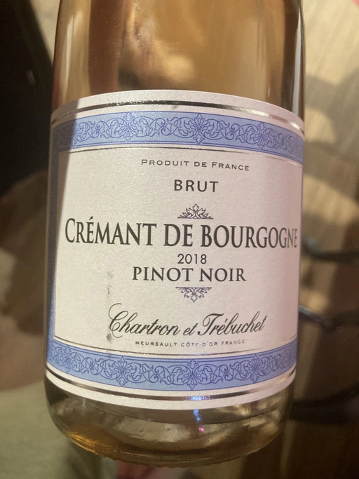
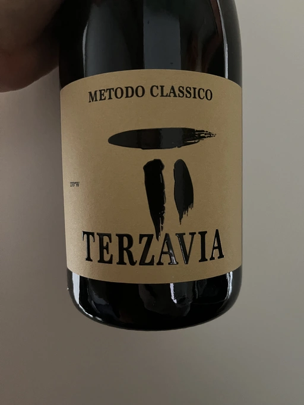

- Type
- White Sparkling, Brut
- Producer
- Chartron et Trébuchet
- Vintage
- 2019
- Location
- France, Crémant de Bourgogne AOC
- Grapes
- Chardonnay
- Alcohol
- 12
- Sugar
- 10
- Price
- 521 UAH
- Cellar
- N/A
Ratings
2022-12-03 - 7.25
Decent and pleasant Crémant. Citro, brioche, citrus notes and yellow apple. Good acidity and a friendly palate. The aftertaste is rather short. It lacks character, but a great choice when you don’t want to argue.
Related

Chartron et Trébuchet
Crémant de Bourgogne Brut Pinot Noir - 2018

Chartron et Trébuchet
Bourgogne Chardonnay - 2021

Alamos
Cabernet Sauvignon - 2019

Marco De Bartoli
Terzavia - 2018

Bodegas la Eralta
Hacienda El Olmo Joven - 2020

Barista
Pinotage - 2020

Seifried Family
Old Coach Road Pinot Noir - 2020